Gestion et déploiement de processus documentaires¶
Introduction¶
La conception d'un processus documentaire a consisté à créer des contenus de type Processus, Etape, Tests dans le site collaboratif 'Processus Documentaires Blue Processus' d'Alfresco Share.
Ce chapitre décrit d'une part comment gérer ces contenus et d'autre part comment les utilisateurs de l'application vont pouvoir utiliser ces processus sur leur documents.
Il indique également les actions que les utilisateurs peuvent faire avant d'intervenir sur un processus documentaire pour bénéficier d'un service de Blue Processus comme la délégation.
Gestion des processus documentaires¶
La gestion de ces contenus se fait donc en utilisant les actions standard d'Alfresco Share par les membres du site collaboratif 'Processus Documentaires Blue Processus' d'Alfresco Share et le modeleur web de processus documentaires via l'action supplémentaire 'Afficher le processus'.
La gestion de contenu Alfresco fait l'objet d'une documentation spécifique proposée par BlueXML 'Guide d'utilisation d'Alfresco & Alfresco Share'.
Le modeleur web de processus documentaires décrit dans le chapitre précédent 'Conception de processus documentaires' est l'outil pour éditer et mettre à jour les processus documentaires.
A la différence des workflows de base d'Alfresco, la modification d'un processus impacte directement les instances de processus en cours.
1er Exemple d'impact d'une modification¶
-
Ainsi si l'utilisateur 'initiateur' a lancé le processus conçu dans le chapitre 'Conception de processus documentaires' qui fait intervenir 3 étapes 'Revision', 'Approbation' et 'Correction' : nous désignerons cette instance par 'IA'.
-
Si l'utilisateur 'concepteur' modifie le processus en assignant l'utilisateur 'userB' à la tâche de 'Revision' en plus de l'utilisateur 'userA' déjà déclaré comme intervenant.
-
L'instance 'IA' est inchangée et seul l'utilisateur 'userA' est assigné à la tâche en cours 'Revision'.
-
Supposons que l'utilisateur 'userA' refuse l'étape 'Revision'.
-
L'utilisateur 'initiateur' a alors la tâche de 'Correction' qu'il 'Re-soumet' après avoir corrigé le document.
-
La tâche 'Revision' est alors assigné à 'userA' et 'userB' conformément aux modifications du processus par l'utilisateur 'concepteur'.
2nd Exemple d'impact d'une modification¶
-
Considérons les étapes 1 à 3 de l'exemple précédent et attendons une journée après le lancement du processus.
-
Par défaut, le service d'alerte et de délégation vérifie quotidiennement si des alertes doivent être produites ou si de nouveaux délégués doivent être à des tâches. Cette opération se fait en réassignant la même tâche aux assignés. Par conséquent, cette réassignation quotidienne va alors assigner la tâche 'Revision' à 'userA' et 'userB' conformément aux modifications du processus par l'utilisateur 'concepteur'.
Déploiement des processus documentaires¶
Déploiement par défaut¶
Le déploiement de processus documentaires créés est automatique et par défaut sous Alfresco Share dans les autres sites collaboratifs.
Sur chaque document d'un type associé à un processus documentaire, la commande 'Approuver le document' permet de sélectionner un des processus associés au type du document.
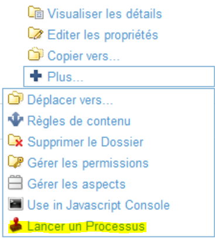
Sur les documents dont le type n'est pas associé à un processus documentaire, la commande n'apparaît pas.
Au lancement de cette commande, un formulaire simple est proposé à l'utilisateur :
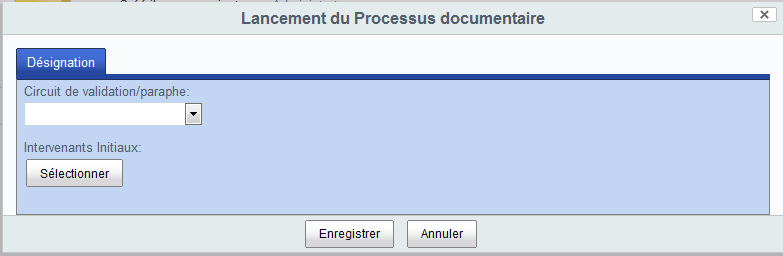
Les propriétés du formulaire sont :
-
La liste de sélection 'Processus documentaire' qui permet de choisir le processus documentaire à lancer sur le document
-
La liste de sélection 'Intervenants initiaux' qui permet de choisir les personnes et/ou groupes à assigner sur la première étape du processus.
Une fois le processus lancé, les utilisateurs assignés à une étape du processus ont accès à la nouvelle action 'Réaliser ma tâche documentaire' sur le document concerné
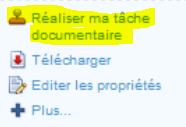
Sur activation de cette action, ils ont accès à un formulaire de tâche (voir 'Exécution de processus documentaire') :
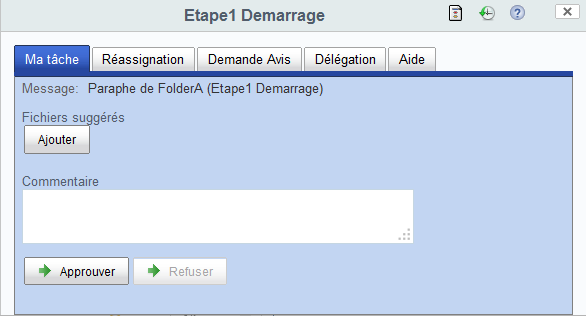
Déploiement spécifique¶
Toutefois dans la majorité des cas, Blue Processus s'intègre à des projets dans lesquels Alfresco Share a été customisé ou des interfaces clientes spécifiques sont utilisées.
L'intégration du lancement d'un processus dans ces cas se fait donc par des personnes ayant des compétences Alfresco et Alfresco Share.
Customisation Alfresco Share¶
Dans le cas d'une application s'appuyant sur une customisation d'alfresco Share, le lancement d'un processus documentaire se fait en général par l'intégration d'un formulaire Share spécifique qui est chargé par l' action 'Approuver le document'.
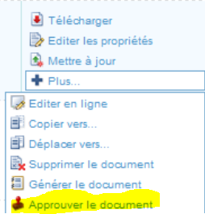
Ce formulaire peut éditer le document lui-même ou permettre la création du paraphe. L'action 'Approuver le document' enchaîne la séquence suivante:
- l'appel du webscript 'blueparapheur/getorcreateparaphdestination?type={type du document}' pour préparer l'environnement du paraphe,
- la soumission du formulaire de création de paraphe ou d'édition du document à l'utilisateur
- une fois le formulaire validé par l'utilisateur, l'appel du webscript 'blueparapheur/createParaphe?document={nodeRef du document}¶phe={nodeRef du paraphe}'
Par exemple:
- la gestion de délibération propose un formulaire de création de paraphe customisé pour le lancement de processus :
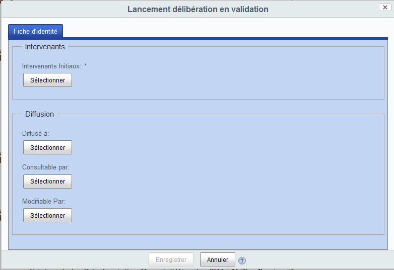
- la gestion de document qualité propose un formulaire d'édition de document pour le lancement de processus :
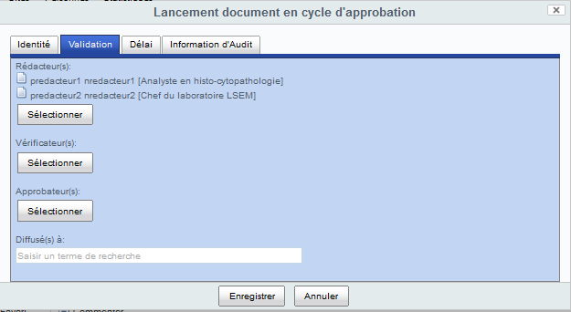
Interfaces clientes spécifiques¶
Dans le cas d'une application avec une interfaces clientes spécifiques, en général l'intégration se fait également par l'appel des webscripts 'blueparapheur/getorcreateparaphdestination' et 'blueparapheur/createParaphe' pour le lancement de processus documentaire et par le chargement de formulaires Share pour l'exécution des tâches.
Par exemple:
- la gestion de courrier propose une action d'envoi en validation matérialisé par un 'V' vert pour le lancement de processus qui appelle les 2 webscripts :
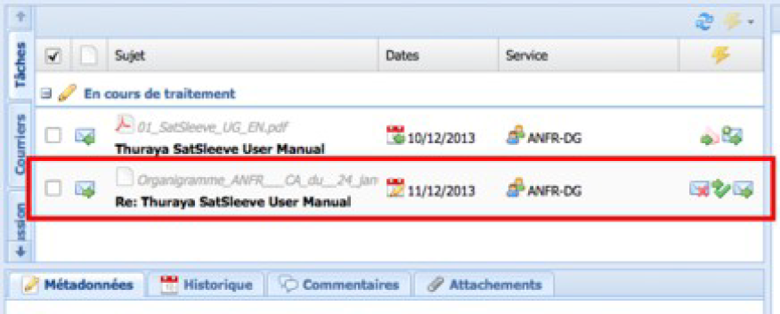
- la gestion de courrier intègre ensuite le formulaire de tâche Share pour l'exécution de tâches :
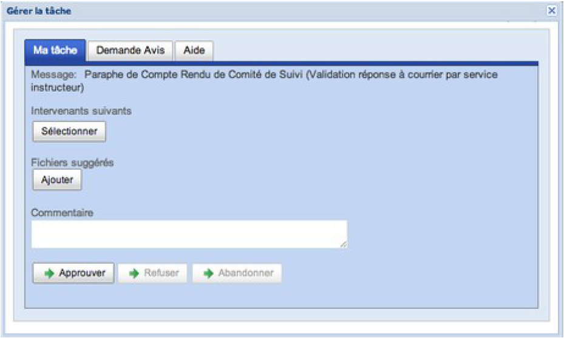
Activation de service par les utilisateurs¶
Introduction¶
Blue Processus propose de nombreux services dont certains doivent être pré-configurés pour en bénéficier pleinement.
Il s'agit principalement de :
-
la délégation en déclarant ses délégués préalablement à la réalisation de tâches où le service 'Délégation' a été activé,
-
la signature électronique en se procurant un certificat personnel préalablement à la réalisation d'une tâche où le service 'Signature électronique' a été activé.
Déclarer ses délégués¶
Blue Processus intègre un module d'extension Alfresco Share qui permet de créer, éditer et supprimer ses délégués ou des suppléants.
La délégation consiste pour un utilisateur à déclarer d'autres utilisateurs comme délégués.
La suppléance consiste à définir un utilisateur en tant que suppléant d'un autre.
Le délégué ou suppléant ainsi déclaré va recevoir les tâches attribuées à la personne qu'il délègue ou supplée. Il pourra alors réaliser ces tâches au nom de ce dernier.
Par exemple :
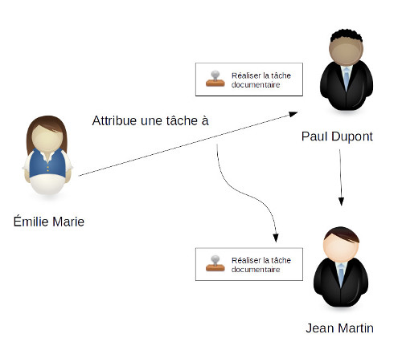
- L'utilisateur Jean Martin est le suppléant de l'utilisateur Paul Dupont.
- Émilie Marie, crée un document et le lance en validation, elle assigne une étape à Paul Dupont.
- En tant que délégué ou suppléant du Paul Dupont, Jean Martin traite la tâche assignée à Paul Dupont. Le formulaire de tâche lui indique qu'il s'agit d'une tâche en délégation/suppléance.
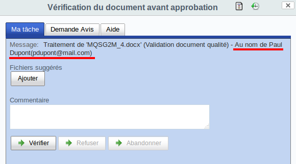
- Une fois que Jean Martin a réalisé la tâche, sous la visualisation du document une entrée est présente dans la liste des accès pour cette dernière.
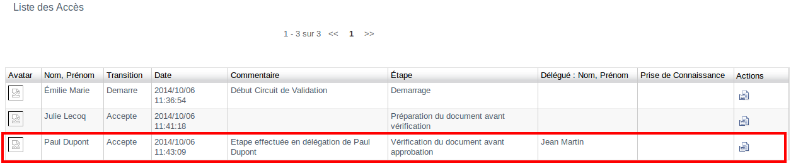
Les opérations de gestion des délégations et des suppléances sont identiques aux 2 seules différences près que :
-
la suppléance est en général faite par un gestionnaire de site,
-
la formulaire de création de suppléant contient un champ supplémentaire qui permet la sélection de la personne qui supplée.
Création d'une délégation¶
-
Allez sur le profil de l'utilisateur (clic sur le nom de l'utilisateur en haut à droite -> clic sur mon profil)
-
Cliquer sur 'Je délègue'
-
Cliquer sur le bouton 'Créer une délégation'
-
Le formulaire de délégation permet de renseigner les champs suivants:
-
'Délégué' : la liste de sélection de la perosnne à qui déléguer
-
'Date de début' : date de début de la délégation
-
'Date de fin' : date de fin de la délégation
Dans le cas de la suppléance le champ supplémentaire 'Délégant' permet de sélectionner la personne qui est suppléée
- Cliquer sur 'Enregistrer' pour créer la délégation qui va démarrer à la date de début si renseigné ou tout de suite si non renseigné
La délégation s'arrête :
-
à la date de fin si renseigné
-
quand vous supprimez la délégation
Visualisation de mes délégations¶
-
Allez sur le profil de l'utilisateur
-
Cliquer sur 'Je délègue'
La liste de vos délégués s'affiche.
Edition d'une délégation¶
-
Allez sur le profil de l'utilisateur
-
Cliquer sur 'Je délègue'
-
Cliquer sur le bouton 'Editer une délégation' à droite de la délégation que vous souhaitez modifier
-
Le formulaire de délégation permet de modifier les champs suivants:
-
'Délégué' : la liste de sélection de la perosnne à qui déléguer,
-
'Date de début' : date de début de la délégation,
-
'Date de fin' : date de fin de la délégation,
Dans le cas de la suppléance le champ supplémentaire 'Délégant' permet de sélectionner la personne qui est suppléée.
- Cliquer sur 'Enregistrer' pour enregistrer la délégation.
Suppression d'une délégation¶
-
Allez sur le profil de l'utilisateur
-
Cliquer sur 'Je délègue'
-
Cliquer sur le bouton 'Supprimer une délégation' à droite de la délégation que vous souhaitez supprimer
-
Cliquer sur '**Confirmer' pour confirmer la suppression de la délégation
Si vous supprimez une délégation et que cette délégation est déjà utilisée par des processus en cours, le délégué de cette délégation a toujours la tâche tant que
-
la tâche n'a pas été rechargée soit automatiquement par le mécanisme de rechargement automatique des délégués (période quotidienne par défaut)
-
ou manuellement lorsqu'un intervenant réalise une demande d'avis ou un rechargement de délégués.
Visualisation de personnes dont je suis délégué¶
-
Allez sur le profil de l'utilisateur
-
Cliquer sur 'Je suis délègué'
La liste des personnes qui vous déléguént leurs tâches s'affiche.